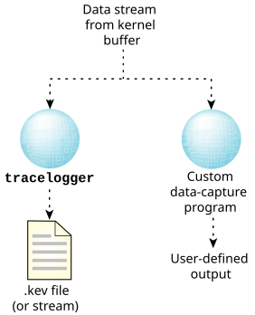
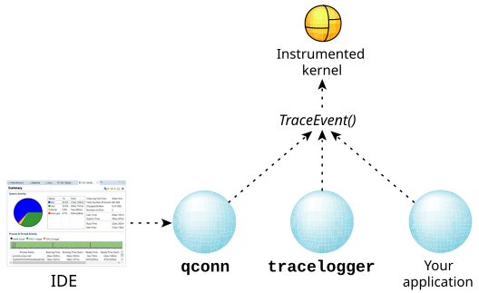

The program that captures data is the messenger
between the instrumented kernel and the filesystem.
Figure 1. Possible data capture configurations.

The main function of the data-capture program is to send the buffers given
to it by the instrumented kernel to an output device or a file.
To accomplish this function, the program must also:
- interface with the kernel
- specify data-filtering requirements the kernel will use
You must configure the instrumented kernel before logging.
The kernel configuration settings include:
- buffer allocations (size)
- which events and classes of events to log (filtering)
- whether to log the events in wide mode or fast mode
Note:
The kernel retains the settings, and multiple programs access a single kernel configuration.
Changing the settings in one process supercedes the settings made in another.
We've provided
tracelogger
as the default data-capture utility.
Although you can write your own utility, there's little need to.
You can control the capture of data via
qconn
(under the control of the Integrated Development Environment, or IDE),
tracelogger
(from the command line), or directly from your application.
All three approaches use the
TraceEvent()
function to control the kernel:
Figure 2. Controlling the capture of trace data.

For information about controlling the trace from the IDE, see the
Analyzing System Behavior
chapter of the IDE User's Guide.
Let's look first at using tracelogger, and then
we'll describe how you can use TraceEvent() to control tracing
from your application.
CAUTION: